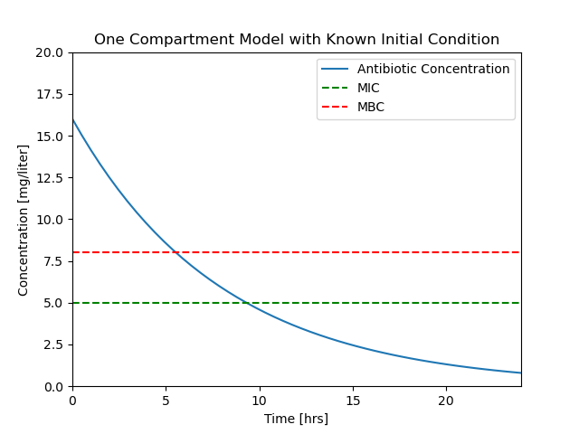

One Compartment Pharmacokinetics
Contents
2.2. One Compartment Pharmacokinetics¶
2.2.1. Learning Goals¶
The notebook demonstrates use of a single, linear, first-order differential equation in the general form
to describe the dynamic response of a one-compartment model for a pharmacokinetics. The state is the concentration of an antimicrobrial in blood plasma. The input is a rate of intraveneous administration. The demonstrated analysis and simulation coding techniques can be used in a wide range of process applications.
2.2.2. Pharamacokinetics¶
Pharmacokinetics is a branch of pharmacology that studies the fate of chemical species in living organisms. The diverse range of applications includes administration of drugs and anesthesia in humans. A closely related field, pharmacodynamics, studies the effect of a chemical species on the body which is beyond the scope of this notebook.
This notebook describes a one compartment model for pharmacokinetics and how it used to determine strategies for the intravenous administration of an antimicrobial.
2.2.2.1. Antimicrobials¶
Let’s consider the administration of an antimicrobial to a patient. Concentration \(C(t)\) refers to the concentration of the antibiotic in blood plasma in units of [mg/L or \(\mu\)g/mL]. There are two concentration levels of interest in the medical use of an antimicrobrial:
Minimum Inhibitory Concentration (MIC) The minimum concentration of the antibiotic that prevents visible growth of a particular microorganism after overnight incubation. This enough to prevent further growth but may not be enought to “kill” the microorganism.

Image Source: Jenay DeCaussin, CC BY-SA 4.0 https://creativecommons.org/licenses/by-sa/4.0, via Wikimedia Commons
Minimum Bactricidal Concentration (MBC) The lowest concentration of the antimicrobrial that prevents the growth of the microorganism after subculture to antimicrobrial-free media. MBC is generally the concentration needed “kill” the microorganism.
Extended exposure to an antimicrobrial at levels below MBC leads to antimicrobrial resistance.
2.2.2.2. Why Model?¶
There are multiple reasons to create mathematical models.
In research and development, a mathematical model forms a testable hypothesis of one’s understanding of a system. The model can guide the design of experiments to validate or falsify the assumptions incorporated in the model.
In the context of control systems, a model can answer operating questions. In pharmacokinetics the operational questions include:
How do we find values for the model parameters?
How long will it take to clear the antimicrobial from the body?
What rate of antimicrobial addition is required to achieve the minimum bactricidal concentration?
If doses are administered periodically, how large should each dose be, and how frequently should the doses be administered?
Questions like these can be answered through regression to experimental data, simulation, and analysis. We’ll explore several of these techniques below.
Steady state analysis
Typical simulations
How does a system respond following an initial condition on the state?
How does the system respond to time-varying inputs?
When do important events occur?
Alternative model formulations
State space model
Gain and time constant model
2.2.2.3. One-Compartment Model¶
A one-compartment pharmacokinetic model assumes the antimicrobial is distributed in a single compartment of the body with constant plasma volume \(V\). The plasma is assumed to be sufficiently well mixed that the drug is uniformly distributed with concentration \(C(t)\). The drug enters the plasma by injection at rate \(u(t)\) meaasured in mg/hour or similar units. The drug leaves the body as a component of the plasma where \(Q\) is the constant plasma clearance rate.

A generic mass balance for a single species is given by
Assuming the drug is neither produced or consumed by reaction in the body, this generic mass balance can be translated to differential equation
Summarizing,
This model is characterized by two parameters, the plasma volume \(V\) and the clearance rate \(Q\).
2.2.2.4. A Sample Problem Statement¶
Assume the minimum inhibitory concentration (MIC) of a microorganism to a antimicrobial is 5 mg/liter, and the minimum bactricidal concentration (MBC) is 8 mg/liter. Assume the plasma volume \(V\) is 4 liters with a clearance rate \(Q\) of 0.5 liters/hour.
An initial intravenous antimicrobial dose of 64 mg in a plasma volume of 4 liters gives an initial plasma concentration \(C_{initial}\) of 16 mg/liter.
How long will the concentration \(C(t)\) stay above MBC?
How long with will \(C(t)\) stay above MIC?
2.2.3. Simulation from a Known Initial Condition¶
2.2.3.1. Solution Strategy¶
The questions raised in the problem statement can be answered through simulation. Given the model parameters in the problem statement, the task is to simulate the response and determine when certain events are encountered.
We could solve this two different ways:
Analytical solution. This is a linear first-order differential equation with constant coefficients with a known analytical solution. The questions above can be answered from the closed-form solution.
Numerical solution. The are many computational alternatives for solving systems of one or more differential equations. In this case there is the extra consideration of finding when certain events take place. As will be shown below, integrate.solve_ivp from the SciPy library is well suited to these tasks.
Below we will develop a numerical solution step-by-step, then consolidate these steps into a single cell that can be extended to more complex applications.
2.2.3.2. Step 1. Import libraries¶
For this first simulation we compute the response of the one compartment model due starting with an initial condition \(C_{initial}\), and assuming input \(u(t) = 0\). We will use the solve_ivp function for solving differential equations from the scipy.integrate library. We will save plots to subdirectories for later reference.
The first steps to a solution are:
Import the
numpylibrary for basic mathematical functions.Import the
matplotlib.pyplotlibrary for plotting.Import ``solve_ivp
from thescipy.integraate` libraryImport
osfor functions needed to save plots to subdirectories.
import numpy as np
import matplotlib.pyplot as plt
from scipy.integrate import solve_ivp
import os
2.2.3.3. Step 2. Enter Parameter Values¶
V = 4 # liters
Q = 0.5 # liters/hour
MIC = 5 # mg/liter
MBC = 8 # mg/liter
C_initial = 16 # mg/liter
2.2.3.4. Step 3. Write the differential equation in standard form¶
The most commonly used solvers for systems of differential equations require a function evaluating the right hand sides of the differential equations when written in a standard form
Here we write this as a composition of two functions. The first function returns values of the input \(u(t)\) for a specified point in time. The second returns values of the right hand side as a function of time and state.
def u(t):
return 0
def deriv(t, C):
return u(t)/V - (Q/V)*C
2.2.3.5. Step 4. Solution¶
The problem statement seeks information about specific events. The Python function scipy.integrate.solve_ivp provides a means of tracking events, such as the crossing a value treshhold. Here we will use this capability to find precise answers to when the concentration falls below the MBC and MIC levels.
# specify time span and evaluation points
t_span = [0, 24]
t_eval = np.linspace(0, 24)
# initial conditions
IC = [C_initial]
# compute solution
soln = solve_ivp(deriv, t_span, IC, t_eval=t_eval)
# display solution
print(soln)
message: 'The solver successfully reached the end of the integration interval.'
nfev: 38
njev: 0
nlu: 0
sol: None
status: 0
success: True
t: array([ 0. , 0.48979592, 0.97959184, 1.46938776, 1.95918367,
2.44897959, 2.93877551, 3.42857143, 3.91836735, 4.40816327,
4.89795918, 5.3877551 , 5.87755102, 6.36734694, 6.85714286,
7.34693878, 7.83673469, 8.32653061, 8.81632653, 9.30612245,
9.79591837, 10.28571429, 10.7755102 , 11.26530612, 11.75510204,
12.24489796, 12.73469388, 13.2244898 , 13.71428571, 14.20408163,
14.69387755, 15.18367347, 15.67346939, 16.16326531, 16.65306122,
17.14285714, 17.63265306, 18.12244898, 18.6122449 , 19.10204082,
19.59183673, 20.08163265, 20.57142857, 21.06122449, 21.55102041,
22.04081633, 22.53061224, 23.02040816, 23.51020408, 24. ])
t_events: None
y: array([[16. , 15.049792 , 14.15601545, 13.31532006, 12.5243503 ,
11.779541 , 11.07848539, 10.41894155, 9.79872358, 9.21570167,
8.66780203, 8.15300696, 7.6693548 , 7.21493994, 6.78791284,
6.38648 , 6.00890398, 5.65350342, 5.31865298, 5.00287861,
4.70546792, 4.42556173, 4.16224355, 3.91462253, 3.68183346,
3.46303676, 3.2574185 , 3.06419036, 2.88258969, 2.71187945,
2.55134825, 2.40031032, 2.25810554, 2.12410249, 1.99786278,
1.87903463, 1.76723355, 1.66208563, 1.56322756, 1.47030662,
1.38298068, 1.30091823, 1.22379831, 1.1513106 , 1.08315534,
1.01904339, 0.95869617, 0.90184573, 0.84828924, 0.79791109]])
y_events: None
2.2.3.6. Step 5. Visualization¶
We wish to determine when the plasma concentration \(C(t)\) falls below the MIC and MBC thresholds. We can get an estimate by examing a plot of these concentrations as a function of time. The following code cell presents a function to create a plot from the soln object ajd saves the plot to a file for later comparison.
def plotConcentration(soln):
fig, ax = plt.subplots(1, 1)
ax.plot(soln.t, soln.y[0])
ax.set_xlim(0, max(soln.t))
ax.plot(ax.get_xlim(), [MIC, MIC], 'g--', ax.get_xlim(), [MBC, MBC], 'r--')
ax.set_ylim(0, 20)
ax.legend(['Antibiotic Concentration','MIC','MBC'])
ax.set_xlabel('Time [hrs]')
ax.set_ylabel('Concentration [mg/liter]')
ax.set_title('One Compartment Model with Known Initial Condition');
return ax
plotConcentration(soln)
# save solution to a file for reuse in documents and reports
os.makedirs("figures", exist_ok=True)
plt.savefig('./figures/Pharmaockinetics1.png')

2.2.4. Finding Events in a Simulation¶
At this point we have a complete simulation. But we don’t yet have a numerical answer to the question of when the concentration of the antimicrobial in the blood plasma falls below the MIC and MBC threshold values.
Locating events is a common task for simulation studies. Events might include
a variable falling below a threshold value,
a variable increasing above a threshold value,
a variable crossing a threshold value, regardless of direction,
reaching a local maximum or minimum value,
crossing an upper alarm threshold in a positive going direction,
crossing a lower alarm threshold in a negative going direction,
a simulation of two objects coming into contact.
An event refers to conditions on the state of a system that may be satisfied at discrete points in time. More than one event can be specified for a system. The simulation task is compute and report the time at which the specified events occur, and possibly to interrupt the simulation to take some action.
The problem statement for the pharamcokinetics describeds two events of interest:
An event that occurs when the value of \(C(t)\) is equal to threshold value of MBC and falling. We will call this event
cross_mcb.An event we will call
cross_micoccurs when the value of \(C(t)\) is equal to threshold value MIC and falling. The simulation is finished when this event occurs.
solve_ivp provides a technique for specifying events. Events are specified in two steps. First a Python def command defines a function that returns a value of zero when variables take the value corresponding to the event. Next, additional properties are assigned to function to add further specifications to the event.
The cross_mbc event occurs when (1) the value of \(C(t)\) is equal to MBC and (2) crossing the MBC threshold in a negative going direction. Here’s how to translate these conditions into Python code for use by solve_ivp.
def cross_mbc(t, y):
"""Return zero when y[0] is equal to MBC."""
return y[0] - MBC
# specify the event occurs when the value of cross_mbc is in a negative going direction
cross_mbc.direction = -1
The cross_mic event is defined analogously to cross_mbc, but with an additional specification that terminates the simulation when the event occurs.
def cross_mic(t, y):
"""Return zero when y[0] is equal to MIC."""
return y[0] - MIC
cross_mic.direction = -1
cross_mic.terminal = True
The simulation is created by packing all of the event objects into a list and passing that list to solve_ivp as an argument named events.
# specify time span and evaluation points
t_span = [0, 24]
t_eval = np.linspace(0, 24)
# initial conditions
IC = [C_initial]
# specify a list of events
events = [cross_mbc, cross_mic]
# compute solution
soln = solve_ivp(deriv, t_span, IC, events=events, t_eval=t_eval)
# display solution
print(soln)
message: 'A termination event occurred.'
nfev: 26
njev: 0
nlu: 0
sol: None
status: 1
success: True
t: array([0. , 0.48979592, 0.97959184, 1.46938776, 1.95918367,
2.44897959, 2.93877551, 3.42857143, 3.91836735, 4.40816327,
4.89795918, 5.3877551 , 5.87755102, 6.36734694, 6.85714286,
7.34693878, 7.83673469, 8.32653061, 8.81632653, 9.30612245])
t_events: [array([5.53942584]), array([9.31072423])]
y: array([[16. , 15.049792 , 14.15601545, 13.31532006, 12.5243503 ,
11.779541 , 11.07848539, 10.41894155, 9.79872358, 9.21570167,
8.66780203, 8.15300696, 7.6693548 , 7.21493994, 6.78791284,
6.38648 , 6.00890398, 5.65350342, 5.31865298, 5.00287861]])
y_events: [array([[8.]]), array([[5.]])]
The solution object now constaints lists named t_events and y_events. Each list contains one array for each event object. Each of those arrays contain the time and values of every occurance of the corresponding event object.
ax = plotConcentration(soln)
t_mbc = soln.t_events[0]
C_mbc = soln.y_events[0]
ax.plot(t_mbc, C_mbc, 'r.', ms=20)
ax.text(t_mbc, C_mbc + 1, f"t = {t_mbc[0]:.2f}", ha="center")
t_mic = soln.t_events[1]
C_mic = soln.y_events[1]
ax.plot(t_mic, C_mic, 'r.', ms=20)
ax.text(t_mic, C_mic + 1, f"t = {t_mic[0]:.2f}", ha="center")
Text([10.04375266], [[6.]], 't = 10.04')

2.2.5. Simulation using a Time-Dependent Input¶
Let’s compare the results we saved earlier to a typical experimental result [Levison and Levison, 2009].
 |
|

We see that that the assumption of a fixed initial condition is questionable. Can we fix this?
For the next simulation we will assume the dosing takes place over a short period of time \(\delta t\). To obtain a total dose \(U_{dose}\) in a time period \(\delta t\), the mass flow rate rate must be
To match results with the prior calculations, we note a total dose of \(U_{dose} = V \times C(0)\) = 64 mg will be injected at a rate \(U_{dose}/dt\) over the specified time period \(dt\).
Before doing a simulation, we will write a Python function for \(u(t)\).
# parameter values
dt = 1.5 # length hours
Udose = 64 # mg
# function defintion
def u(t):
if t <= 0:
return 0
elif t <= dt:
return Udose/dt
else:
return 0
This code cell demonstrates the use of a list comprehension to apply a function to each value in a list.
# visualization
t = np.linspace(0, 24, 1000) # create a list of time steps
fig, ax = plt.subplots(1, 1)
ax.plot(t, [u(tau) for tau in t])
ax.set_xlabel('Time [hrs]')
ax.set_ylabel('Administration Rate [mg/hr]')
ax.set_title('Dosing function u(t) for of total dose {0} mg'.format(Udose))
Text(0.5, 1.0, 'Dosing function u(t) for of total dose 64 mg')

For this simulation we add both cross_mbc and cross_mic events, but without specifying termination.
# specify time span and evaluation points
t_span = [0, 24]
t_eval = np.linspace(0, 24, 50)
# initial conditions
C_initial = 0
IC = [C_initial]
# events
def cross_mbc(t, y):
return y[0] - MBC
cross_mbc.direction = -1
def cross_mic(t, y):
return y[0] - MIC
cross_mic.direction = -1
events = [cross_mbc, cross_mic]
# compute solution
soln = solve_ivp(deriv, t_span, IC, events=events, t_eval=t_eval)
# display solution
ax = plotConcentration(soln)
t_mbc = soln.t_events[0]
C_mbc = soln.y_events[0]
ax.plot(t_mbc, C_mbc, 'r.', ms=20)
ax.text(t_mbc, C_mbc + 1, f"t = {t_mbc[0]:.2f}", ha="center")
t_mic = soln.t_events[1]
C_mic = soln.y_events[1]
ax.plot(t_mic, C_mic, 'r.', ms=20)
ax.text(t_mic, C_mic + 1, f"t = {t_mic[0]:.2f}", ha="center")
os.makedirs("figures", exist_ok=True)
plt.savefig('./figures/Pharmaockinetics2.png')

Let’s compare our results to a typical experimental result [Levison and Levison, 2009].
|
While it isn’t perfect, this is a closer facsimile of actual physiological response.
2.2.6. Periodic Dosing¶
2.2.6.1. Problem Statement¶
The minimum inhibitory concentration (MIC) of a particular organism to an antibiotic is 5 mg/liter, the minimum bactricidal concentration (MBC) is 8 mg/liter. Assume the plasma volume \(V\) is 4 liters with a clearance rate \(Q\) of 0.5 liters/hour.
Design an antibiotic therapy to keep the plasma concentration above the MIC level for a period of 96 hours.
2.2.6.2. Solution¶
We consider the case of repetitive dosing where a new dose is administered every \(t_{dose}\) hours. A simple Python “trick” for this calculation is the % operator which returns the remainder following division. This is a useful tool whenever you need to functions that repeat in time.
# parameter values
dt = 2 # length of administration for a single dose
tdose = 8 # time between doses
Udose = 42 # mg
# function defintion
def u(t):
return Udose/dt if t % tdose <= dt else 0
# visualization
t = np.linspace(0, 96, 1000) # create a list of time steps
fig, ax = plt.subplots(1, 1)
ax.plot(t, [u(tau) for tau in t])
ax.set_xlabel('Time [hrs]')
ax.set_ylabel('Administration Rate [mg/hr]')
ax.set_title('Dosing function u(t) for of total dose {0} mg'.format(Udose))
Text(0.5, 1.0, 'Dosing function u(t) for of total dose 42 mg')

The dosing function \(u(t)\) is now applied to the simulation of drug concentration in the blood plasma. A fourth argument is added to odeint(deriv, Cinitial, t, tcrit=t) indicating that special care must be used for every time step. This is needed in order to get a high fidelity simulation that accounts for the rapidly varying values of \(u(t)\).
# specify time span and evaluation points
t_span = [0, 96]
t_eval = np.linspace(0, 96, 1000)
# initial conditions
C_initial = 0
IC = [C_initial]
# compute solution
soln = solve_ivp(deriv, t_span, IC, t_eval=t_eval)
# display solution
plotConcentration(soln)
os.makedirs("figures", exist_ok=True)
plt.savefig('./figures/Pharmaockinetics3.png')
print(soln.t_events)
None

This looks like a unevem. The problem here is that the solver is using time steps larger than the dosing interval and missing important changes in the input.
The fix is to specify the max_step option for the solver. max_step sets the maximum step size for the solver. As a rule of thumb, your simulations should always specify a max_step shorter than the minimum feature in the input sequence. In this case we specify a max_step of 0.1 hr which is short enough to not miss detail in \(u(t)\).
# specify time span and evaluation points
t_span = [0, 96]
t_eval = np.linspace(0, 96, 1000)
# initial conditions
C_initial = 0
IC = [C_initial]
# compute solution
soln = solve_ivp(deriv, t_span, IC, t_eval=t_eval, max_step=0.1)
# display solution
plotConcentration(soln)
os.makedirs("figures", exist_ok=True)
plt.savefig('./figures/Pharmaockinetics4.png')
print(soln.t_events)
None

import numpy as np
import matplotlib.pyplot as plt
from scipy.integrate import solve_ivp
import os
# parameter values
V = 4 # liters
Q = 0.5 # liters/hour
MIC = 5 # mg/liter
MBC = 8 # mg/liter
C_initial = 0 # mg/liter
# differential equation
def deriv(t, C):
return u(t)/V - (Q/V)*C
# input parameter values
dt = 2 # length of administration for a single dose
tdose = 8 # time between doses
Udose = 42 # mg
def u(t):
return Udose/dt if t % tdose <= dt else 0
# events
def cross_mbc(t, y):
return y[0] - MBC
cross_mbc.direction = -1
def cross_mic(t, y):
return y[0] - MIC
cross_mic.direction = -1
events = [cross_mbc, cross_mic]
# specify time span and evaluation points
t_span = [0, 96]
t_eval = np.linspace(0, 96, 1000)
# initial conditions
C_initial = 0
IC = [C_initial]
# compute solution
soln = solve_ivp(deriv, t_span, IC, events=events, t_eval=t_eval, max_step=0.1)
# display solution
ax = plotConcentration(soln)
for j, event in enumerate(events):
for k, t in enumerate(soln.t_events[j]):
ax.plot(t, soln.y_events[j][k][0], 'r.', ms=10)
os.makedirs("figures", exist_ok=True)
plt.savefig('./figures/Pharmaockinetics5.png')

2.2.7. Exercises¶
Exercise 1
The purpose of the dosing regime is to maintain the plasma concentration above the MBC level for at least 96 hours. Assuming that each dose is 64 mg, modify the simulation and find a value of \(t_{dose}\) that satisfies the MBC objective for a 96 hour period. Show a plot concentration versus time, and include Python code to compute the total amount of antibiotic administered for the whole treatment.
Exercise 2
Consider a continous antibiotic injection at a constant rate designed to maintain the plasma concentration at minimum bactricidal level. Your solution should proceed in three steps:
First, by hand, set up and solve the steady state equation to find the desired constant dosage rate.
Modify the Python function for \(u(t)\) to simulate the desired flowrate.
Verify your result by repeating the above simulation using your function for \(u(t)\).